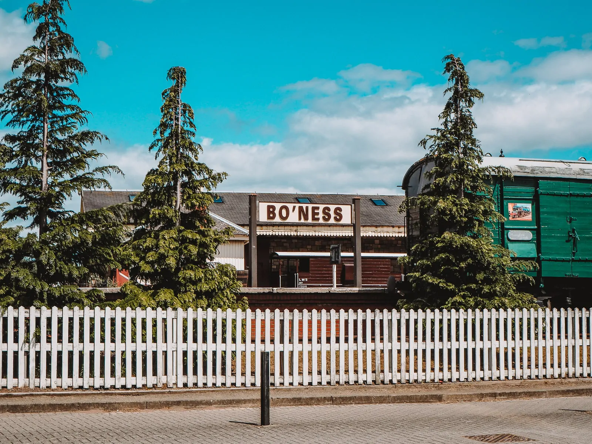
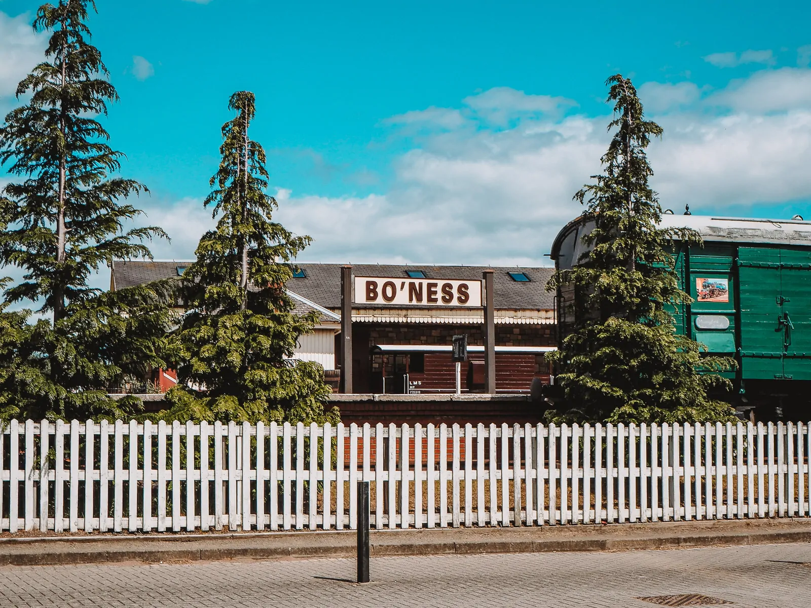
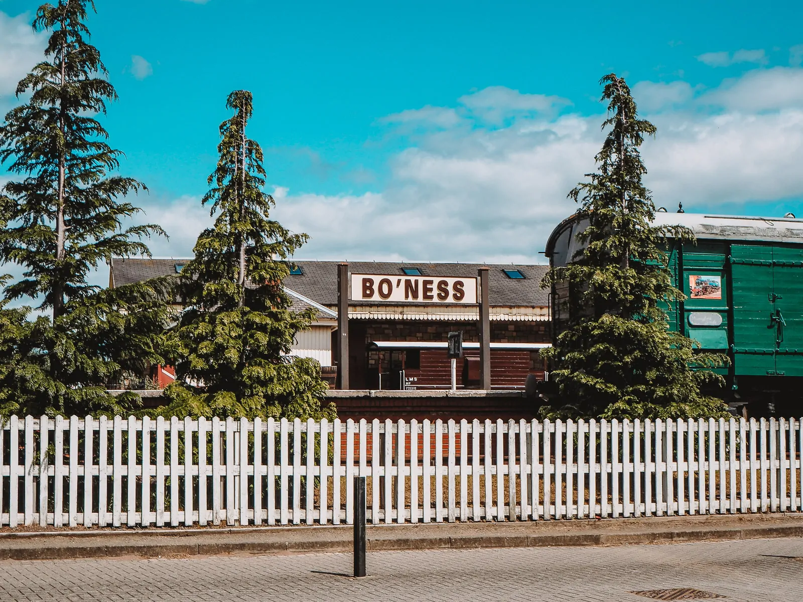
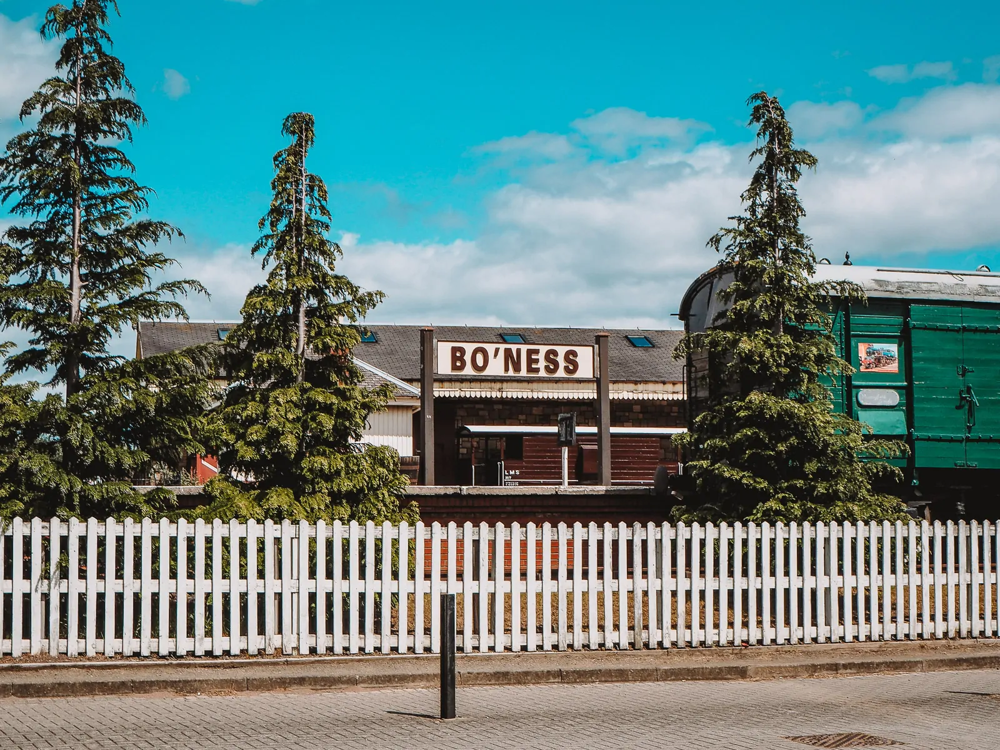

 

Bo'ness (Borrowstounness) is a historic town located in the central belt of Scotland. The town doesn't have an exact foundation date, however the name Bo'ness is believed to have been in circulation since the 1400s. The origin of the name Borrowstounness comes from "Borrowstoun" which comes from the Old English for "Beornweard's farmstead" and "ness" which originates from the Scottish Gaelic for "headland".

(Without Fear)